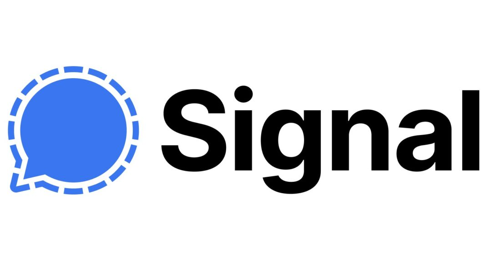

O que significa uma rede ser descentralizada?
Significa que a informação trocada, seja entre duas pessoas, varias, um site, etc, em vez de ser transmitida entre um usuário e o servidor (comunicação centralizada), ela passa por uma rota parecida com a imagem acima, de vários servidores que hospedam e retransmitem esta informação, assim, fica quase impossível saber de onde uma informação veio. Pense nisso como uma carta sem remetente nem destinatário: se o remetente entregar diretamente para o destinatário, todos ali presentes saberiam quem enviou a carta a quem, porém, em um "Sistema de correios descentralizado e encriptado", o remetente enviaria sua carta para o seu endereço, porém antes disso, ela passaria na mão de diversas pessoas em ordem aleatória para assim chegar na sua mão; Note que nenhuma destas pessoas conseguiria ler sua carta, pois ela está encriptada, e você é o único que tem a chave.
Smartphones
Signal

Session
- Não necessita de número de telefone
- É totalmente descentralizado
- Segurança adicional
Element
O Signal é da lista o mais fácil de usar para pessoas inexperientes na área; Tem uma interface simples, é seguro, confiável, encriptado de ponta a ponta...
Ele tem duso que se espera de um mensageiro moderno, e como um exemplo de sua segurança, cerda de um ano atrás o FBI requisitou que o Signal o enviassem todos os dados que eles coletavam sobre seus usuários; Como resposta, o signal enviou um documento que falava que não coletavam nenhum tipo de dados sobre seus usuários, e ainda usaram o UNIX-timestamp somente para sacanear com o FBI.
É atualmente a alternativa mais parecida com o Whatsapp.
FonteDuas pessoas que usam e recomendam o Signal são Elon Musk e Donald Trump.
Funciona tanto em Android Quanto em IOS
De Longe o meu favoritdo, e é um dos que considero mais seguros. Como o signal, ele é encriptado de ponta a ponta, porém, ele apresenta um diferencial: ele oculta a identidade dos dois usuários que estão conversando.
Com a encriptação de ponta a ponta, estamos escondendo apenas o conteúdo, porém, os dois usuários ainda são identificaveis, e caso não saiba, isso não ajuda muito, pois a internet já é em grande parte encriptada, é como se fosse uma casa protegida apenas por uma cerca: um espectador de fora, não consegue ouvir o que duas pessoas estão conversando do lado de dentro, mas consegue muito bem saber quem são as pessoas que estão conversando.
O Session nos oferece algumas seguranças a mais que os outros mensageiros:
O Session usa um sistema de chaves privadas para se identificar, e para conversar com outras pessoas, em vez de usar o número de telefones, é só usar a chave dela ou o QR-code.
o que significa que não existe um servidor principal pela qual suas mensagens passam para serem encaminhadas para o destinatário, se este fosse o caso, a chance das mensagens serem analizadas por um algoritmo, arquivadas pela empresa ou enviadas para um programa de monitoramento seria alta.
Além disso, o Session usa um sístema de Onion-Routing, parecido com o Tor, que em vez de (como explidado acima) passar por um servidor principal, o sistema onion calcula uma rota descentralizada e passa suas mensagens por essa rota, sendo impossível traçar de onde vieram ou para onde vão as mensagens.
Além de muitas outras coisas, o Session permite que o usuário configure um PIN para adentrar no aplicativo. No caso de seu celular ser confiscado ou roubado, suas conversas estarão seguras.
Funciona tanto em Android Quanto em IOS
Seria desta lista a melhor alternativa ao Discord, já que tem uma premissa e funcionamento muito similar, porém, descentralizado e encriptado de ponta-a-ponta.
Ele tem o diferencial de ser baseado na rede Matrix, uma rede segura e descentralizada focada em comunicação segura.
É o mais seguro nesta lista para substituir o Discord, e tem uma interface simples de usar.